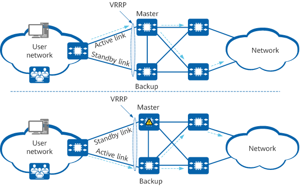

On a large enterprise aggregation network, users access aggregation devices with a VRRP group deployed over primary and secondary links. If the aggregation device that serves as the master in the VRRP group fails or the link between the master and terminal fails, service traffic immediately switches from the primary link to the secondary link. However, the master/backup VRRP switchover is not instant, causing service traffic to be lost during the period before the switchover is complete.
To resolve this issue and deliver carrier-grade reliability, enable the backup device to forward service traffic. Once this is enabled, the backup device forwards service traffic without waiting for the master/backup VRRP switchover to complete, which prevents service traffic loss.

system-view
interface interface-type interface-number
vrrp vrid virtual-router-id backup-forward
By default, a backup device is disabled from forwarding service traffic.